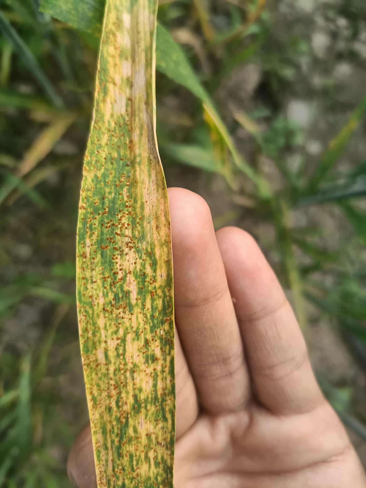
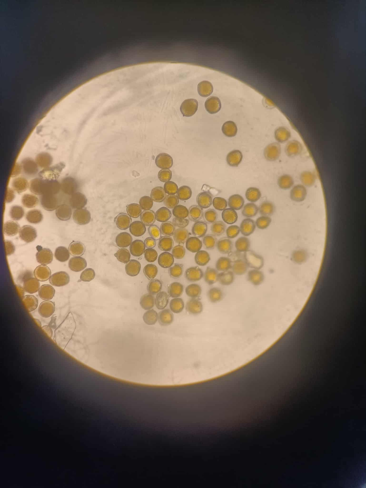
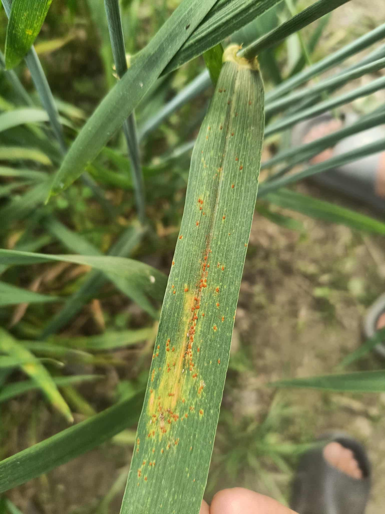
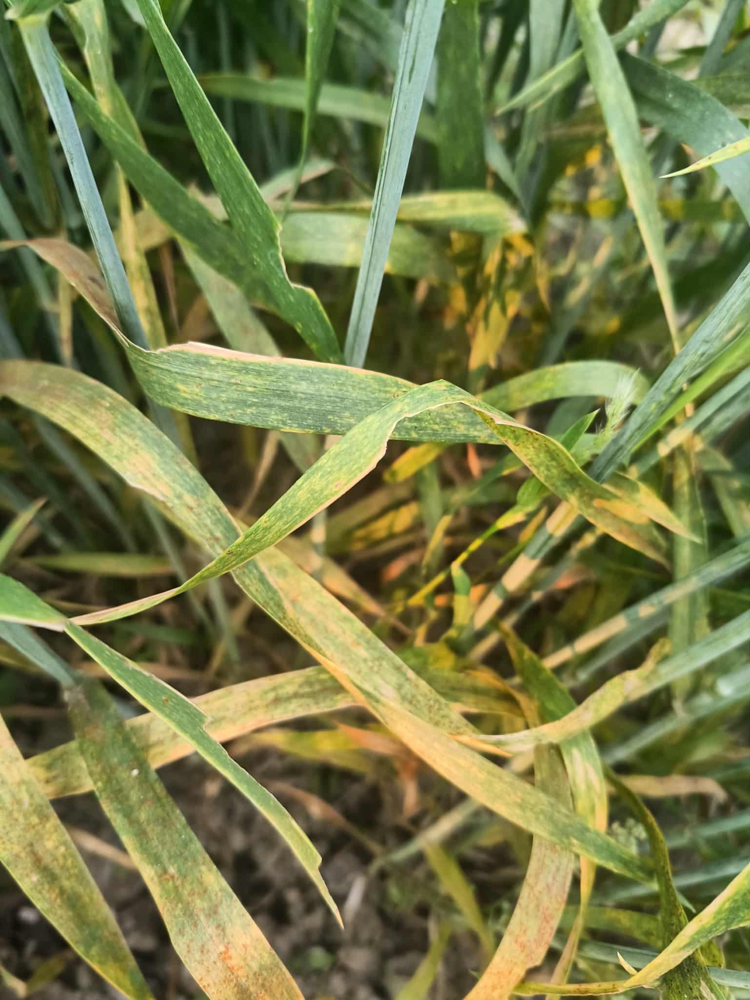
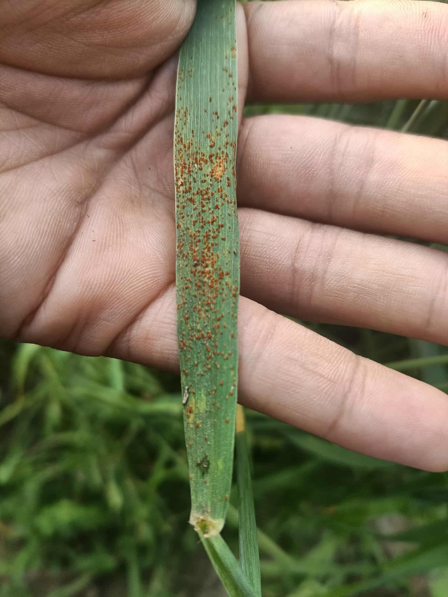

Background
Wheat production is increasingly threatened by both biotic and abiotic stresses. Leaf rust reduces grain yield, whereas drought stress accelerates canopy senescence and limits photosynthesis. High-throughput phenotyping tools such as NDVI and canopy temperature provide rapid, objective, and non-destructive measurements of crop vigor and stress response. Integrating these physiological traits with disease assessment improves the efficiency of selecting superior wheat genotypes.
Why this Research?
Field observations revealed substantial variation in leaf rust severity, canopy greenness, and canopy temperature among wheat genotypes. Supported by a research grant from Champadevi Rural Municipality, this study combined conventional pathology with sensor-based phenotyping to identify wheat lines possessing superior disease resistance, physiological performance, and grain yield.
Materials & Methods
Twenty-four wheat genotypes were evaluated under an alpha lattice design with two replications. Leaf rust severity was recorded using the Modified Cobb Scale to estimate AUDPC, relative AUDPC, coefficient of infection, and disease progress rate. NDVI was measured using a GreenSeeker sensor, while canopy temperature was recorded using a handheld infrared thermometer during grain filling. Grain yield was measured at harvest.
Research Highlights







Future Recommendations
Future studies should integrate UAV-based multispectral imaging, thermal cameras, genomic selection, and multi-location validation to accelerate breeding for climate-resilient, disease-resistant, and high-yielding wheat cultivars.